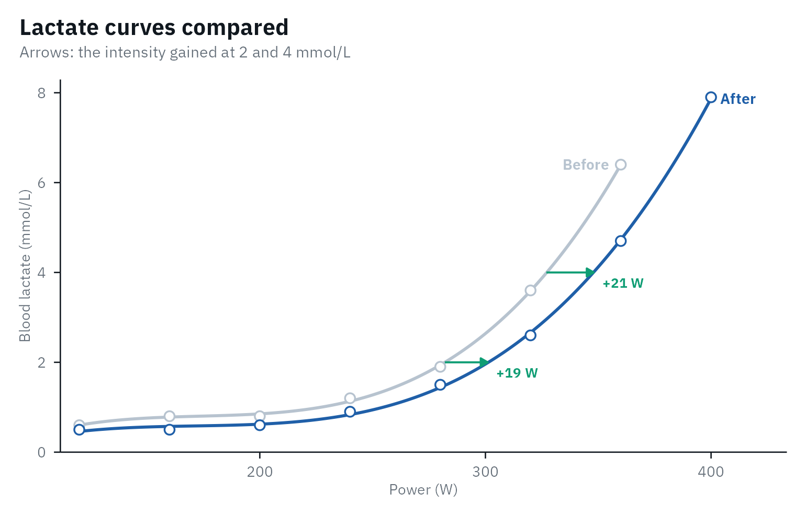
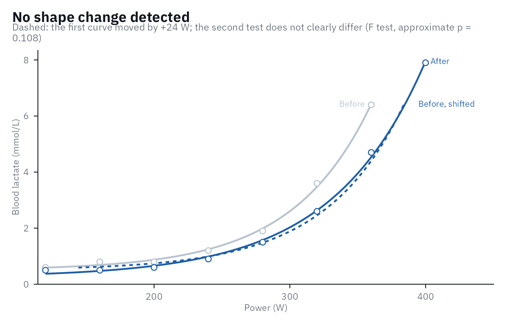
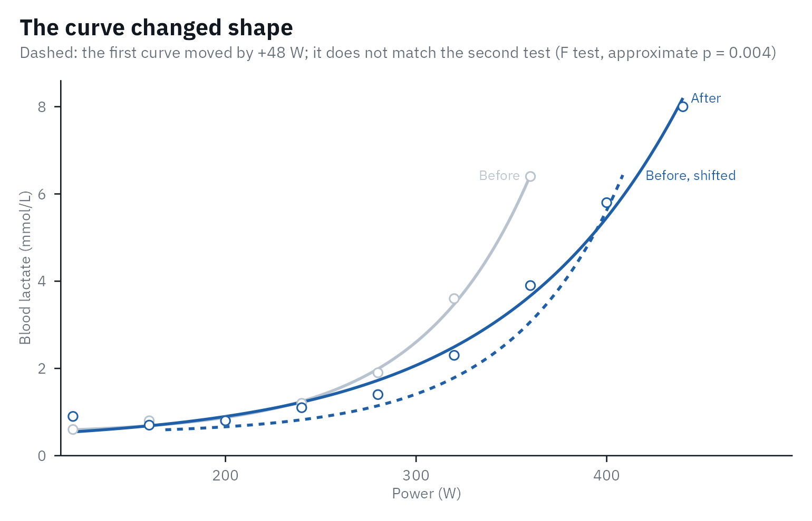
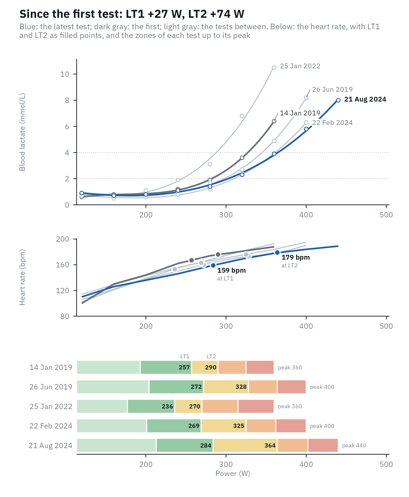

A step test is most useful the second time: did the athlete improve,
by how much, and is that more than the noise of the test? This article
uses the six tests of one trained cyclist in lactate_tests
(real data from Trinity College Dublin, CC BY 4.0), over five and a half
years.
library(lactater)
library(dplyr)
series <- lactate_tests |>
filter(athlete == "cyclist_series")
series |>
distinct(test, day)
#> # A tibble: 6 × 2
#> test day
#> <chr> <int>
#> 1 cycling_series_1 0
#> 2 cycling_series_2 58
#> 3 cycling_series_3 163
#> 4 cycling_series_4 1107
#> 5 cycling_series_5 1865
#> 6 cycling_series_6 2046
analyse <- function(d) {
series |>
filter(day == d) |>
lactate_threshold(intensity, lactate, heart_rate, plot = FALSE)
}
before <- analyse(0)
after <- analyse(58)Before comparing, check both tests on their own (see Checking the analysis), and make sure they were run the same way: the same protocol, sampling site, sample type and analyzer (see Best practices).
Is the change real?
A threshold moves between two tests even when fitness does not,
through day-to-day variation and the error of the analyzer and the
method. compare_tests() gives every change an interval from
the test-retest variation of the method (Hopkins,
2000; Swinton et
al., 2018), and three columns to read it by: the noise
(what two tests of that method usually differ by when nothing changed),
the ratio of the change to it, and a verdict,
“beyond the noise” when the whole interval is on one side of zero, or of
the smallest worthwhile change you set with swc. There is
no agreed level for that interval: 90% is the default, 95% the classic
choice, and narrower ones are defended for decisions in practice
(Swinton et al., 2018); set it with level. At 90%, an
unchanged threshold is called a gain in 5% of comparisons and a loss in
5%: a one-sided test for a gain at 5%, which Sainani (2018)
recommends in place of graded terms. “Within the noise” does not mean
that nothing changed. With a cv of 4% to 5%, a threshold
has to move by about 10% to lie beyond the noise, so one pair of tests
rarely settles it, and a series of tests says more (below). lactater
does not turn the interval into “likely” or “very likely”: those terms
read it as the probability of a true change, which it is not (Lohse et al.,
2020).
Read the verdict of the LT1 and LT2 you chose in
lactate_threshold(), which the header gives, and choose
level and swc before you look. Every method
has its own verdict, and with 18 of them some lie beyond the noise by
chance: in 157 pairs of consecutive tests of the cyclists of Heuberger
et al. (2018), each method did in 6% to 15% of pairs, but at least one
of them in 50%. Sainani & Chamari
(2022) ask for the outcome to be named beforehand when many are
tested: here, that is the pair you chose.
comparison <- compare_tests(before, after)
comparison |>
select(method, before, after, change, change_low, change_high, cv, noise, ratio, verdict)
#> # Tests compared: cycling, 18 methods; noise: what two tests differ by when
#> # nothing changed; verdict at 90%
#> # LT1: 257 to 268 W (+10, 0.3 x the noise of 30 W: within the
#> # noise), by Bsln + 0.5
#> # LT2: 304 to 326 W (+22, 0.9 x the noise of 24 W: within the
#> # noise), by Log-Poly-ModDmax
#> method before after change change_low change_high cv noise ratio verdict
#> <fct> <dbl> <dbl> <dbl> <dbl> <dbl> <dbl> <dbl> <dbl> <chr>
#> 1 Log-log 239 236 -3 -46 41 7.8 26 -0.1 within…
#> 2 OBLA 2.0 282 301 19 -31 70 7.7 31 0.6 within…
#> 3 OBLA 2.5 296 316 19 -17 55 5.2 22 0.9 within…
#> 4 OBLA 3.0 308 328 20 -13 53 4.6 20 1 within…
#> 5 OBLA 3.5 318 338 20 -15 56 4.8 22 0.9 within…
#> 6 OBLA 4.0 327 348 21 -13 54 4.4 20 1 within…
#> 7 Bsln + … 257 268 10 -39 59 8.2 30 0.3 within…
#> 8 Bsln + … 279 291 12 -20 45 5 20 0.6 within…
#> 9 Bsln + … 294 307 14 -17 44 4.5 19 0.7 within…
#> 10 Dmax 270 291 22 -15 59 5.9 22 1 within…
#> 11 ModDmax 290 327 36 2 71 5.1 21 1.7 beyond…
#> 12 Exp-Dmax 277 303 26 -2 53 4.3 17 1.5 within…
#> 13 Log-Pol… 304 326 22 -17 61 5.5 24 0.9 within…
#> 14 Log-Exp… 309 333 24 -11 59 4.9 21 1.1 within…
#> 15 LTP1 222 257 35 -20 90 10.6 33 1.1 within…
#> 16 LTP2 301 341 40 -2 82 6 26 1.6 within…
#> 17 LTratio 192 180 -12 -54 30 9.4 25 -0.5 within…
#> 18 IAT 294 304 10 -20 40 4.4 18 0.5 within…The default test-retest variation of each method (the cv
column) is lactater’s own calculation on the open data of Heuberger et
al. (2018): the five step tests of each of 47 trained male cyclists,
about two weeks apart, analyzed with lactate_reliability().
It is about 4% to 6% for the thresholds aimed at LT2 and 8% to 11% for
Bsln + 0.5, Log-log, LTratio and LTP1, so a first-rise
threshold has to move about twice as far before the change is clear.
These defaults are on the careful side: the published values are lower
(3.4% to 4.3% for Dmax, IAT, 4 mmol/L and ModDmax
in the placebo riders of the same study; 3.4% to 3.7% for Bsln+ in a
ramp test, Pallares et al.,
2016), and ?compare_tests lists both, to give the
published ones with cv if you prefer them. The best
cv is still the one of your own athletes with your own
protocol: measure it with lactate_reliability(). The
defaults come from cyclists and are used for every sport, and the notes
say so when the tests are not cycling. For running, no open test-retest
data were found to compute them the same way. Published typical errors
are about 0.3 to 0.8 km/h (2% to 6%) in 22 trained men (Cerezuela-Espejo et al.,
2018, from the SDs of their differences) and 0.4 to 1.4 km/h in 19
healthy, untrained people (Gavin et al.,
2014), close to the cycling defaults.
attr(comparison, "notes") lists what could make two tests
hard to compare: a different protocol, sample type or resting sample, or
a fall in peak lactate, which also moves the curve to the right.
How far did the curve move?
Thresholds are single points; the whole curve tells more.
curve_shift() gives the intensity gained at each lactate,
and the lactate saved at the intensities you choose.
curve_shift(before, after, intensity = c(250, 300))
#> # A tibble: 8 × 8
#> lactate intensity_before intensity_after shift intensity lactate_before
#> <dbl> <dbl> <dbl> <dbl> <dbl> <dbl>
#> 1 1.5 262 283 20 NA NA
#> 2 2 282 301 19 NA NA
#> 3 2.5 296 316 19 NA NA
#> 4 3 308 328 20 NA NA
#> 5 3.5 318 338 20 NA NA
#> 6 4 327 348 21 NA NA
#> 7 NA NA NA NA 250 1.3
#> 8 NA NA NA NA 300 2.6
#> # ℹ 2 more variables: lactate_after <dbl>, lactate_change <dbl>
autoplot(comparison)
Did the curve shift, or change its shape?
Training can move the whole curve to the right, or change its shape:
a later or a gentler rise. curve_shape() fits both tests
with the exponential plus constant,
lactate = a + b * exp(c * intensity) (Hughson et al.,
1987), twice: once with one shape for both tests, the second moved
sideways by a shift, and once with a shape for each test. An
extra-sum-of-squares F test (Motulsky &
Ransnas, 1987) and AICc (Hurvich & Tsai,
1989) compare the two fits, and the shift comes with a confidence
interval.
shape <- curve_shape(before, after)
shape
#> Shift only vs free shape: F(2, 9) = 2.88, approximate p = 0.108; AICc -49.7 vs -43.8.
#> No shape change detected: one curve shifted by +24 W (95% CI 21 to 28) describes both tests, but with fewer than 8 stages the test finds few changes of shape.
#> Peak lactate 6.4 -> 7.9 mmol/L. A shift can also come from low glycogen or overreaching, not only fitness.
autoplot(shape)
In the first 58 days the curve moved by about 24 W, and one shape describes both tests. Five and a half years later, it is a different story:
later <- curve_shape(before, analyse(2046))
later
#> Shift only vs free shape: F(2, 10) = 10.41, approximate p = 0.004; AICc -19.8 vs -25.8.
#> The shape changed: a shift alone (+48 W) does not describe both tests.
#> Peak lactate 6.4 -> 8.0 mmol/L.
autoplot(later)
Read the result with care:
- Little power. “No shape change detected” is not proof that the shape is the same. In simulated tests of a trained cyclist, a baseline 0.5 mmol/L higher was found in 96% of pairs with 8 stages per test, but in 20% with 6.
- An approximate p-value. The F test is exact only for models that are linear in their parameters (Motulsky & Ransnas, 1987); here it fell below 0.05 in 8% to 10% of simulated pairs with no change of shape. The verdict also asks AICc, and was wrong in 1% to 6%.
- A shift is not always fitness. In this model, a shift to the right is the same as a proportional fall of lactate above baseline. Better endurance, low glycogen stores and overreaching can all produce it (Maassen & Busse, 1989; Faude et al., 2009), so check the peak lactate, the diet before the test and the performance too.
-
The curve must fit. The exponential cannot follow
an early lactate dip; check both tests with
lactate_diagnostics()first.
A series of tests
For up to five tests, the plot of lactate_trend() shows
where the curve moved and what that did to the training zones: every
lactate curve, the latest in blue and the first in dark gray, above the
five zones of each test from the LT1 and LT2 you choose.
day takes the date of each test, or the days since the
first. The test dates are not in lactate_tests, so this
example starts on a made-up date, with five of the six tests:
days <- c(0, 163, 1107, 1865, 2046)
tests <- purrr::map(days, analyse)
trend <- lactate_trend(!!!tests, day = as.Date("2019-01-14") + days)
autoplot(trend, lt1 = "Bsln + 0.5", lt2 = "ModDmax")
The curve did not move in a straight line: in the third test, three
years in, both thresholds sat below those of the first test, with a
higher peak lactate at the same peak power. lactate_trend()
also fits a straight line to each threshold, with its 90% interval (set
it with level), to show the direction without reading too
much into one test:
trend |>
filter(method %in% c("Bsln + 0.5", "ModDmax", "OBLA 4.0", "IAT"))
#> # A tibble: 4 × 7
#> method tests per_30_days low high first last
#> <fct> <int> <dbl> <dbl> <dbl> <dbl> <dbl>
#> 1 OBLA 4.0 5 0.4 -0.8 1.6 323 351
#> 2 Bsln + 0.5 5 0.2 -0.6 0.9 257 270
#> 3 ModDmax 5 0.6 -0.8 2 295 335
#> 4 IAT 5 0.2 -0.8 1.2 291 306For longer series, such as monitoring over a season, the plot shows
each threshold over time instead (view = "thresholds", the
default above five tests): each test as a dot, against a gray band for
the noise of the method around the first test, where 90% of test-to-test
changes fall when nothing changed (Hopkins,
2000). Every test is one more look: with nothing changed, at least
one dot falls outside the band in 24% of series with three later tests
and in 43% with eight, so one dark dot in a long series is weak
evidence, and the trend line is the answer for the series.
To report a series to the athlete or the coach, give
test_report() two to five tests and their dates: the report
starts with the progress, then describes the latest test (see
an example).
Comparing athletes
Per kg of body mass, and as a percentage of the highest intensity and heart rate of the test:
body_mass <- series |>
filter(day == 58) |>
pull(body_mass) |>
first()
relative_thresholds(after, body_mass = body_mass) |>
filter(method %in% c("Log-log", "ModDmax", "IAT")) |>
select(method, intensity, intensity_per_kg, percent_peak, percent_peak_heart_rate)
#> Warning: Unknown or uninitialised column: `method_category`.
#> # Lactate thresholds: cycling, 3rd degree polynomial, 8 stages + rest
#> # LT1: 268 W (Bsln + 0.5)
#> # LT2: 326 W (Log-Poly-ModDmax)
#> method intensity intensity_per_kg percent_peak percent_peak_heart_rate
#> <fct> <dbl> <dbl> <dbl> <dbl>
#> 1 Log-log 236 2.89 59 79.6
#> 2 ModDmax 327 4 81.6 90.8
#> 3 IAT 304 3.73 76 88.3A fixed lactate concentration falls at a similar percentage of peak power in trained and untrained people (Maassen & Busse, 1989), so a percentage of peak does not rank fitness on its own.
Against the population
For people who are not athletes, such as clients, patients and
students, reference_percentiles() places the power at 3
mmol/L and at 1 mmol/L above the resting lactate on the percentiles of
the German population of the same age and sex: 5,190 people aged 14 to
64 from two national health surveys, whose thresholds were computed with
lactater (Fiedler et al.,
2025). It gives the percentile and the standing in plain words, such
as “top 25%”. Here the demo test, for a man of 31 and 72 kg:
demo <- lactate_threshold(demo_data, intensity, lactate, heart_rate, plot = FALSE)
reference_percentiles(demo, age = 31, sex = "male", body_mass = 72)
#> # Reference percentiles: men aged 31 in Germany (Fiedler et al., 2025)
#> # Reference test: cycle ergometer, +25 W every 2 min, earlobe blood;
#> # general population, not athletes
#> method value unit percentile standing
#> <chr> <dbl> <chr> <dbl> <chr>
#> 1 OBLA 3.0 130 W 53 upper half
#> 2 Bsln + 1.0 105 W 41 lower half
#> 3 OBLA 3.0 1.8 W/kg 76 top 25%
#> 4 Bsln + 1.0 1.45 W/kg 63 upper halfThe reference tests started at 25 W and added 25 W every 2 min, with
earlobe blood. Percentiles only transfer between tests run the same way:
shorter stages put the thresholds at higher intensities (Bentley et al.,
2007), so the 3-min stages of demo_data make this man
look a little weaker than he would on the reference protocol. Trained
cyclists land above the 97.5th percentile, so use these values for the
general population, not to rank athletes.
report_reference() adds this comparison to a test
report.
References
Bentley DJ, Newell J, Bishop D. Incremental exercise test design and analysis: implications for performance diagnostics in endurance athletes. Sports Med. 2007;37(7):575-86. doi:10.2165/00007256-200737070-00002
Cerezuela-Espejo V, Courel-Ibáñez J, Morán-Navarro R, Martínez-Cava A, Pallarés JG. The relationship between lactate and ventilatory thresholds in runners: validity and reliability of exercise test performance parameters. Front Physiol. 2018;9:1320. doi:10.3389/fphys.2018.01320
Faude O, Kindermann W, Meyer T. Lactate threshold concepts: how valid are they? Sports Med. 2009;39(6):469-90. doi:10.2165/00007256-200939060-00003
Fiedler J, Thron M, Altmann S, Härtel S, Barsch F, Schlenker L, Krug S, Bös K, Woll A. Reference standards for power at the lactate threshold 2 for cycle ergometry throughout the lifespan in Germany. J Sports Sci. 2025;43(16):1654-64. doi:10.1080/02640414.2025.2517913
Gavin JP, Willems MET, Myers SD. Reproducibility of lactate markers during 4 and 8 min stage incremental running: a pilot study. J Sci Med Sport. 2014;17(6):635-9. doi:10.1016/j.jsams.2013.08.006
Heuberger JAAC, Gal P, Stuurman FE, de Muinck Keizer WAS, Mejia Miranda Y, Cohen AF. Repeatability and predictive value of lactate threshold concepts in endurance sports. PLOS ONE. 2018;13(11):e0206846. doi:10.1371/journal.pone.0206846
Hopkins WG. Measures of reliability in sports medicine and science. Sports Med. 2000;30(1):1-15. doi:10.2165/00007256-200030010-00001
Hurvich CM, Tsai CL. Regression and time series model selection in small samples. Biometrika. 1989;76(2):297-307. doi:10.1093/biomet/76.2.297
Hughson RL, Weisiger KH, Swanson GD. Blood lactate concentration increases as a continuous function in progressive exercise. J Appl Physiol. 1987;62(5):1975-81. doi:10.1152/jappl.1987.62.5.1975
Maassen N, Busse MW. The relationship between lactic acid and work load: a measure for endurance capacity or an indicator of carbohydrate deficiency? Eur J Appl Physiol Occup Physiol. 1989;58(7):728-37. doi:10.1007/BF00637384
Motulsky HJ, Ransnas LA. Fitting curves to data using nonlinear regression: a practical and nonmathematical review. FASEB J. 1987;1(5):365-74. doi:10.1096/fasebj.1.5.3315805
Pallares JG, Moran-Navarro R, Ortega JF, Fernandez-Elias VE, Mora-Rodriguez R. Validity and reliability of ventilatory and blood lactate thresholds in well-trained cyclists. PLOS ONE. 2016;11(9):e0163389. doi:10.1371/journal.pone.0163389
Sainani KL. The problem with “magnitude-based inference”. Med Sci Sports Exerc. 2018;50(10):2166-76. doi:10.1249/MSS.0000000000001645
Sainani KL, Chamari K. Wish list for improving the quality of statistics in sport science. Int J Sports Physiol Perform. 2022;17(5):673-4. doi:10.1123/ijspp.2022-0023
Swinton PA, Hemingway BS, Saunders B, Gualano B, Dolan E. A statistical framework to interpret individual response to intervention: paving the way for personalized nutrition and exercise prescription. Front Nutr. 2018;5:41. doi:10.3389/fnut.2018.00041